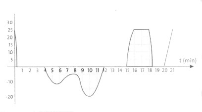
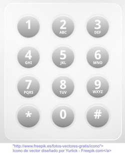
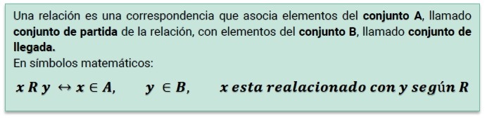
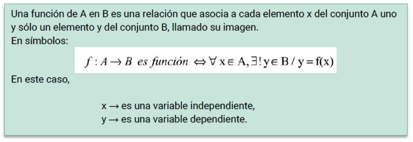

FUNCIONES
Definición de función
Problema 1
Gonzalo es guardavidas de una playa de Villa Gesell. Como ya se acerca el desafío “interbalneario”, se entrena, con mayor intensidad, todas las mañanas muy temprano.
Con sus amigos, y en un bote, se alejan de la costa, para que Gonzalo pueda realizar su entrenamiento: resistencia bajo el agua, velocidad de nado en distintos estilos, etc.
A continuación, la representación gráfica te muestra la altura h (en centímetros sobre el nivel del mar) a la que se encuentra Gonzalo durante algunos minutos t de su entrenamiento.

A partir de la lectura interpretativa del gráfico, podríamos responder las siguientes preguntas:
-
¿Dónde se encontraba Gonzalo a los 3 minutos?
-
¿En qué minuto estaba 20 cm debajo del agua?
Problema 2
Las teclas de los teléfonos tienen letras y números asignados. Valiéndose de eso, muchas empresas que contratan el servicio de 0800 idean, con un objetivo comercial, números fáciles de memorizar para sus clientes. Así, por ejemplo, una escuela podría tener el 0800-372-8352, que se corresponde con el 0800-ESCUELA.
- ¿Qué números habrá que marcar para comunicarse con el 0800-HELADOS?
- ¿A qué palabra corresponderá el 0800-1843367?
En la representación gráfica del Problema 1 podemos ver la vinculación de dos variables: el tiempo durante el cual estuvo nadando Gonzalo y la altura sobre el nivel del mar en la que se encontraba en cada momento. A estas variables las denominamos dependiente (la altura) e independiente (el tiempo).
En el Problema 2, por su parte, los números están relacionados con las letras: la ubicación de estas depende de la ubicación de los números.
Esta dependencia o correspondencia describe una relación.

En el primer problema podemos responder a las preguntas porque a cada valor de la variable independiente le corresponde un único valor de variable dependiente. Por ejemplo, podemos responder que Gonzalo a los 3 minutos estaba nadando sobre el nivel del mar, que es la interpretación de la relación expresada por el par ordenado (3;0).
En cambio, en el segundo problema, cuando relacionamos un número con una letra de la misma tecla, puede haber varias posibilidades. Por ejemplo, a la tecla del número 5 le corresponden las letras J, K y L. Sumado a eso, a las teclas de los números 1 y 0 no se les asigna ninguna letra.
En lo que sigue nos centraremos en el análisis de aquellas relaciones donde se vinculan todos y cada uno de los valores de la variable independiente con un único valor de la variable dependiente.
A este tipo de relaciones las definiremos de la siguiente manera:


Te recomendamos el siguiente video para profundizar el concepto de funciones:
Link - Concepto de función
Obra publicada con Licencia Creative Commons Reconocimiento Compartir igual 4.0